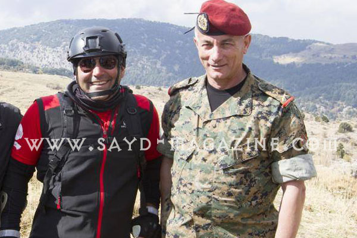
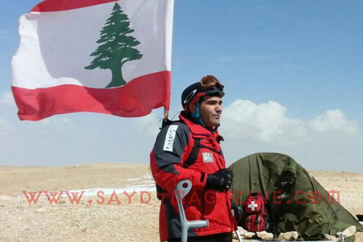
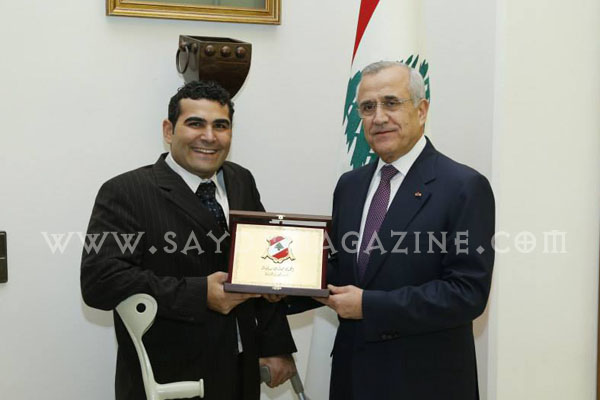
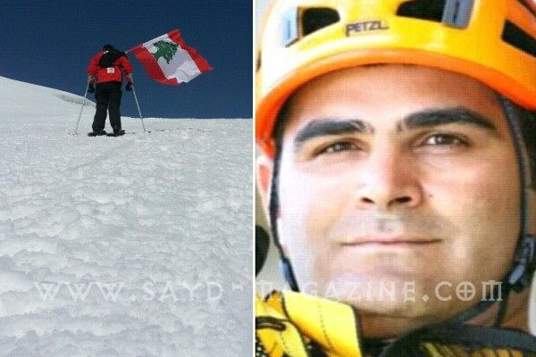

كتبوا عنه: "مايكل حداد يتحدّى إعاقته بإنجازات كبيرة وأرقام قياسية". مخطئون هم، فمايكل حداد لا يتحدّى الإعاقة، إنّه يستخدم وضعه الصحيّ ليتحدّى أصحاب النفوس الضعيفة الخاضعة، وكل مَن يعتقد بأنّ مّن هم بوضعه لا يستطيعون القيام بأي إنجاز.
فالشلل من صدره حتى أسفل قدميه ( جراء حادثة جيت سكي منذ عمر 6 سنوات ) لم يمنعه من ان يُثبت لنفسه وللعالم بأنّ مَن يمتلك إيماناً كإيمانه، وإرادة كإرادته، ووفاءاً لوطنه كوفائه، يستطيع الوصول مهما كانت المصاعب، خصوصا مع الدعم الكامل الذي يلقاه من الجيش اللبناني .
بعد تسلقه صخرة الروشة منذ سنتين، واجتيازه مسافة 19كلم من أرز بشري إلى محمية أرز تنورين في العام الماضي، أضاف الى سجّله هذا العام إنجازاً جديداً يحمل إسمه.. فبالتزامن مع نشاط إغارة الأرز من أرز تنورين إلى أرز بشري الذي قام به فوج المغاوير تحت عنوان "صار وقت تكون مغوار" كان مايكل على مقربة من القرنة السوداء ليرفع علم بلاده بعد سير لمدة ثلاثة ايام كان له مع كل سقطة ووجع فى هذا التحدي الاستثنائي شعور بالإعتزاز والفخر .
كتبوا عنه: "مايكل حداد يتحدّى إعاقته بإنجازات كبيرة وأرقام قياسية". مخطئون هم، فمايكل حداد لا يتحدّى الإعاقة، إنّه يستخدم وضعه الصحيّ ليتحدّى أصحاب النفوس الضعيفة الخاضعة، وكل مَن يعتقد بأنّ مّن هم بوضعه لا يستطيعون القيام بأي إنجاز.
فالشلل من صدره حتى أسفل قدميه ( جراء حادثة جيت سكي منذ عمر 6 سنوات ) لم يمنعه من ان يُثبت لنفسه وللعالم بأنّ مَن يمتلك إيماناً كإيمانه، وإرادة كإرادته، ووفاءاً لوطنه كوفائه، يستطيع الوصول مهما كانت المصاعب، خصوصا مع الدعم الكامل الذي يلقاه من الجيش اللبناني .
بعد تسلقه صخرة الروشة منذ سنتين، واجتيازه مسافة 19كلم من أرز بشري إلى محمية أرز تنورين في العام الماضي، أضاف الى سجّله هذا العام إنجازاً جديداً يحمل إسمه.. فبالتزامن مع نشاط إغارة الأرز من أرز تنورين إلى أرز بشري الذي قام به فوج المغاوير تحت عنوان "صار وقت تكون مغوار" كان مايكل على مقربة من القرنة السوداء ليرفع علم بلاده بعد سير لمدة ثلاثة ايام كان له مع كل سقطة ووجع فى هذا التحدي الاستثنائي شعور بالإعتزاز والفخر .


أصبح الناس يعرفون مَن هو مايكل حداد مع الانجازات الثلاث التي وصلتَ إليها، إلى أين تريد الوصول أكثر؟ نجحتُ في هذه الانجازات وطموحي أكبر من ذلك، لكنّ الهدف ليس مايكل حداد بل الرسالة التي يريد إيصالها، إذ أني أتبنى الرسالة التي تقول بأنّ "الإعاقة هي نفسية تفكير" إضافة لرسالة السلام والتحلي بالارادة، والإيمان بأنّ لا شيء مستحيل لدى الإنسان. إني اليوم أتحدّى نفسي لسببين: للإثبات بأنّ الإعاقة هي نفسية تفكير، والسبب الثاني هو طموحي بتطوير الـ Exo skeleton research الذي نقوم به بالتعاون مع الجامعة اللبنانية الأميركية وenergy phoenix التي هي جزء من INDEVCO Group. إنني مصمم على الذهاب في هذا المشروع حتى النهاية لنعطي للناس بيئة تعليمية ونبرهن لهم إلى أين نستطيع الوصول بالرغم من وضعنا الصحي ومدى قدرتنا على التطوير.

بما تشعر قبل كل تحدٍّ وبعده؟ قبل كل تحدٍّ هناك خوف طبعاً، لكنني إعتدتُ على مواجهة خوفي، وهذا الخوف بدأ منذ الخطوة الأولى لي في هذه التحديات، ولكنني أتكل على إيماني وقدرتي في المواجهة. أشعر بروح التحدي قبل كل إنجاز، ولكنني أنظر إلى ما سأصل إليه بقوّة وعزم، لأن هناك الكثير من الداعمين لي والمؤمنين بي وخاصة فوج المغاوير في الجيش اللبناني وكل الفريق الكبير الذي أعمل لأجله منذ سنوات، علماً أني وقبل كل إنجاز أريد تحقيقه، أخطط له وأعمل عليه قبل سنة أو ستة أشهر على الأقل.

كيف يساعدك تأييد الناس لكَ؟ الناس ودعمهم هو الأهم والحافز الأكبر لي، فعندما أرى محبة الناس لي ووجودهم حولي باستمرار أشعر أنّ ذلك أكبر جائزة وأهم تقدير يمكن ان أحصل عليه.

قال في اللقاء - قال لي الجنرال شامل روكز: "تذكر بأنكَ عندما تحمل علم وطنك، لا مجال للنظر إلى الوراء" - القوة التي أتمتع بها تأتي من القرار والإيمان ، بدون قرار وايمان تذهب القوة في إتجاهات خاطئة. - المدرسة الوطنية الأولى التي أعطتني الدافع لعدم الاستسلام هي سرية القتال الجبلي- فوج المغاوير في الجيش اللبناني. - النجاح لايأتي من عنصر واحد،.. هناك مجموعة حققت هذا النجاح أبرزهم النقيب رودولف عقل والمؤهل أول غابي قرطباوي وحرب حرب وأحمد عبدو وغيرهم. - راية عدم الاستسلام أصبحت رايتي - الجيش اللبناني هو مدرستي الوحيدة، لولاه لما وصلت الى هنا . - أحظى برعاية قائد الجيش العماد جان قهوجي الذي قال احدى المرات : "نحن ننظر إلى الإنسانية والمثابرة وبناء الانسان وبالتالي بناء المجتمع" - وقعت آلاف المرات، وكنتُ أتألم في كل مرّة لكنا الهدف امامي كان واضحا، وهو الصبر والتحدي لأجل الوصول - أحزن عندما أرى ما يتلّهى به الناس في هذا الوطن وأشعر بالألم . - أتذكر دائماً ما قاله جو كندي: "لا تفكر بما قد يقدّمه وطنك لك، بل بما يمكنك تقديمه له ". - أما عن الجهاز الجديد الذي استخدمه للوصول إلى القرنة السوداء، قال مايكل: للأسف أنني استعملت الهيكل في نصف الطريق، فقد حصل عطل في "الرتراك" الخاص بالجيش الذي كان من المفترض ان يوصلنا إلى بداية طريق القرنة السوداء، على أن نكمل السير نحو القرنة، لذلك اضطررنا استعمال الزلاجات فاضطررت لاستعمال الهيكل القديم حتى الوصول إلى نصف المسافة، ومن ثم قمتُ بتغييره واستعمال الهيكل الجديد "exo skeleton carbon fiber"، ولو لم استعمله لكنتُ تعذبتُ كثيراً، لأنهlight weight technology وقوي ويحتوي طاقة مخزّنة. أعتبر هذا الهيكل تطوراً كبيراً لأنّ الوزن الخفيف والطاقة المخزّنة والصلابة التي يتمتع بها هذا الجهاز، ساعدتني كثيراً في طريقي نحو القرنة السوداء، إضافة لما قمتُ باستعماله في أسفل كل عصا وما ساعدني بشكل كبير، علماً أننا لم نكن نمتلك الوقت الكافي للعمل على إعداد ركائز متعددة مما تسبب في انكسار أكثر من ركيزة crutch ولكن بشكل عام كان هذا الهيكل متطوراً جداً بالرغم من كل الصعوبات التي واجهتها خاصة مع معاناتي وسقوطي لعدة مرات على الأرض. كل التضحيات التي أقوم بها والتحديات، تساعدنا في اكتشاف تطور جديد وحلول جديدة في كل تحدٍّ أقوم به، والهدف الأساس من كل ذلك هو لأني وضعتُ هذا الموضوع كهدف أساسي لي بالتعاون مع الفريق الكامل، لأن نتيجته النهائية ستساعد مَن هم بوضعي الصحي، ليتمكّنوا من السير والاعتماد على أنفسهم.حوار : سالي نوفل الصور من أرشيف مايكل حداد [gallery ids="1896,1895,1894,1898,1892,1891,1890,1887,1889"]